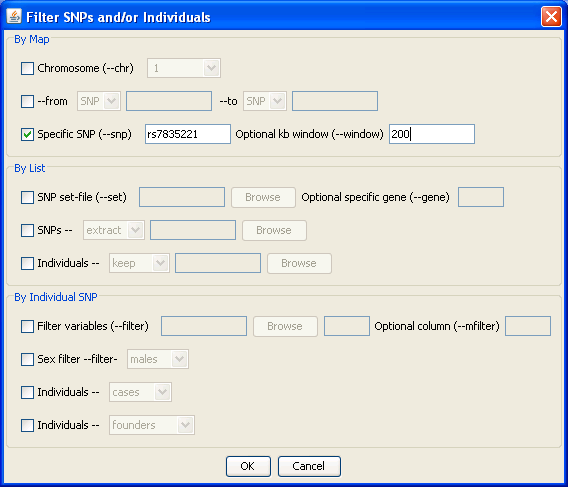

PLINK: Whole genome data analysis toolset

Using filters
We selected the
Filters
option from the previous dialog. Here we can filter on SNPs and/or individuals. In this case, we specify a particular SNP and all other SNPs in the surrounding 200 kb window
Previous
|
Next